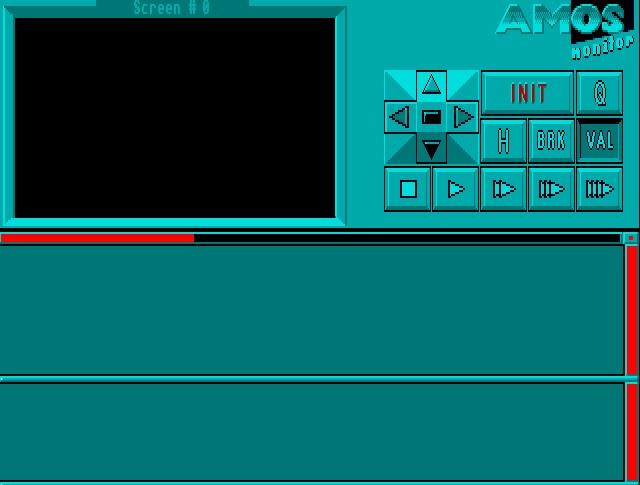

Amos Professional Manual Contents Index
the Monitor
Now trigger the [Monitor] option or press [F5], and the Monitor Screen will appear looking
something like this:

The AMOS Professional Monitor has been designed to perform all of the following tasks:
- To examine the instructions in a program, one at a time, and to display a report showing the
result of what happens when its parameters have been evaluated. In other words, the Monitor
can test any instruction in any program.
- To display HELP information regarding any selected instruction.
- To supply the result of any expression in the program, where possible. If there is an error in
the expression, the offending line will be identified.
- To provide error message reports.
The Monitor screen is divided into four areas, as follows:
- The top left-hand quarter is the graphic output window.
- The top right-hand quarter is the control keypad.
- The central lower screen is the program listing window.
- The bottom lower screen is the information window.